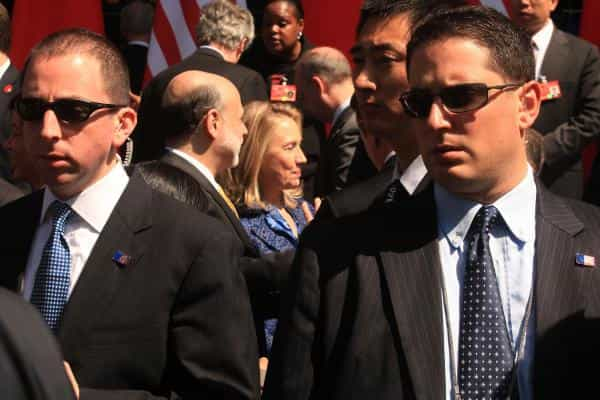
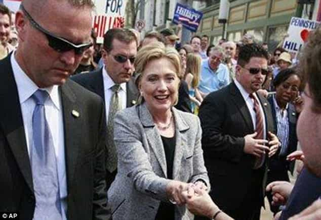
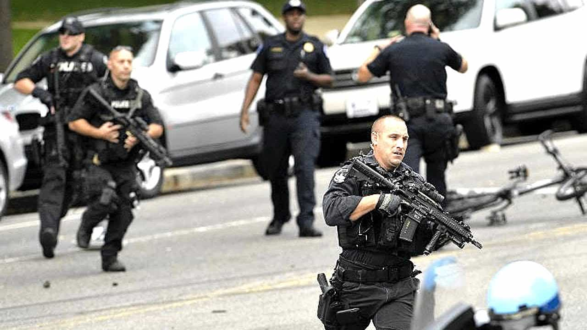
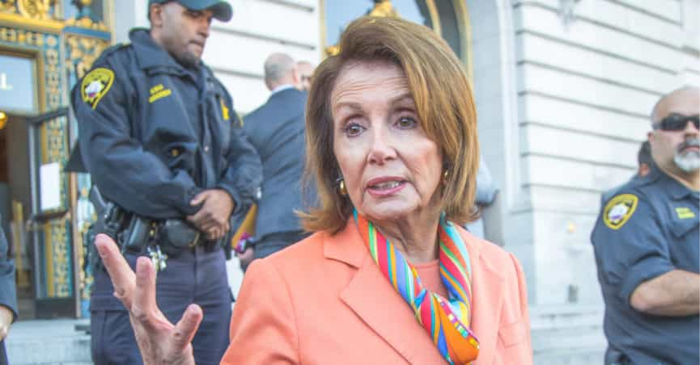

Gender social experiments in the military are being conducted at an alarming pace, but the protection of senior American politicians is being left–surprise, surprise–almost exclusively to men. While the national security of Western countries is being progressively dismantled by an influx of poorly qualified female military recruits, those tasked with directly keeping liberals from harm’s way are almost universally male Secret Service agents and other male bodyguards.
Hillary Clinton, for example, really, really didn’t like the idea of having fellow members of the Sisterhood shielding her during her 2016 Presidential run:

Unless these very male-looking Secret Service agents somehow identify as women and fit some kind of female quota for recruits.

At least we know that one half of the Clinton Political Machine doesn’t support gender quotas for Secret Service agents.
Alas, senior politicians are afforded the security that the rest of us are being increasingly denied–physically and mentally competent armed protectors, who are almost always going to be men. For all the SJW clamoring about patriarchy and gender bias, SJW Senators and House Members, or those simply pandering to SJWs from within Congress, are quite happy to outsource their 24/7 personal security to men, largely and even deliberately excluding women.
The two best examples of this hypocrisy are the respective usages of the US Secret Service and the US Capitol Police. The latter body is one of the few law enforcement bodies directly under the control of a legislature, rather than the executive arm of government. The overwhelming majority of frontline Secret Service agents and heavily-armed US Capitol Police, however, are men. None of the transgender or female-oriented military policies orchestrated by the Obama Administration seem to have made their way into the Secret Service or the emergency response arms of the Capitol Police.
When common sense briefly returns–but for very selfish reasons
When their own asses are on their line, liberal politicians opt for men to protect them.
Of course, all of this makes perfect sense. Physically unimpressive women (and men) are a clear liability in situations requiring the protection of government institutions, people, or simply vulnerable locations, as shown in the case of a Muslim terrorist who easily disarmed a female soldier at Paris’ very busy Orly Airport earlier this year.
But for us, the mere common folk, our local law enforcement officers do not even have to pass basic fitness tests to ensure we can be protected by them, all because society needs more female police officers ([1] [2]).
In the same vein, potential female members of the US Marine Corps are currently enjoying the white-knighting of a lifetime courtesy of deplorably relaxed physical standards, allowing them to be retained and paid for the kind of poor conditioning that would see male recruits thrown out of the military. More alarmingly still, the present American and wider Western adoration for gender affirmative action comes at the same time that China is undergoing its unprecedented rise as a global military power.
The one context where all the gender diversity madness takes a permanent vacation
Here’s a photograph showing the response of the US Capitol Police when an evidently unstable female morotist tried to attack one of their checkpoints, checkpoints designed to protect the 550 Members of Congress from death or serious physical harm:

Where are all the women running at full pace and carrying heavy automatic and semi-automatic weapons? Between early 2007 and early 2011, the Democrats, whose leaders included the ultra-SJW windbag and House of Representatives Speaker Nancy Pelosi, had all the time in the world to take a stand for gender “equality” and mandate a 50% quota for frontline US Capitol Police. They had control of Congress, let’s remember. Yet they did nothing.
If an equal representation of women is not good enough for the bodies tasked with protecting politicians, an equal representation (or anything close to it) for institutions as vital as the US military is unacceptable, too. The very heavy division of duties in the Secret Service and US Capitol Police also obscures the very high proportion of men literally putting themselves on the line for liberal, gender experiment-obsessed politicians.
Uniformed desk jobs and other civilian roles give the appearance of a much greater female workforce when, in fact, very few women will ever face any prospect of taking a bullet for their boss. Case in point: some 90% of Secret Service agents are men, and agents across the board exhibit a great diversity (pardon the pun) in the particular dangers of their job roles.
Only by ridiculously increasing the funding for their own protection can liberal politicians feign gender “equality” in the Secret Service and Capitol Police

Nancy Pelosi and the patriarchy.
The Republican-dominated Congress has recently raised the prospect of increasing US Capitol Police funding, but Democrats have done the same thing in the past. This is probably the only way that liberal and SJW politicians could effect some kind of bizarre gender parity in the Secret Service or US Capitol Police. Instead of having half a dozen agents or uniformed police standing with them, a particular person might be given a dozen.
Regardless of whether they choose to ignore the issue entirely or think of dishonest ways to promote gender “equality” when it comes to their own protection, leftist political figures will always ensure for themselves the kind of physical safety that the rest of us could only dream of.
We the general public will get the perverse gender experiments that put us in growing danger, whether from the violent gang-banger or the foreign military opponent like China, while liberals at the top can sleep peacefully with the knowledge that they will always be protected via the public purse–and by men.
Read More: The Australian Military Is Enforcing A 70% Female Quota For New Recruits